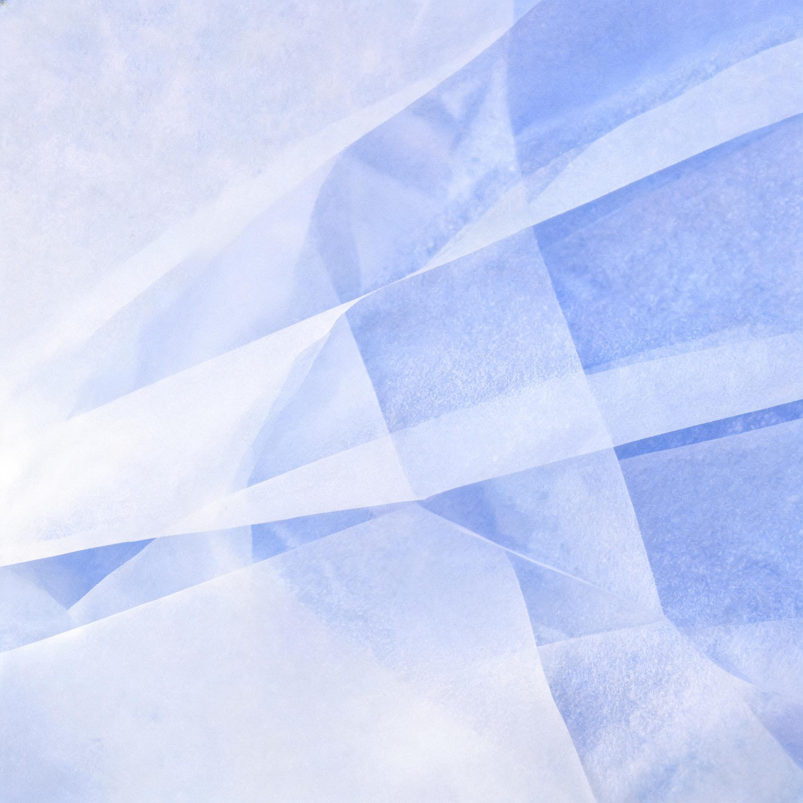
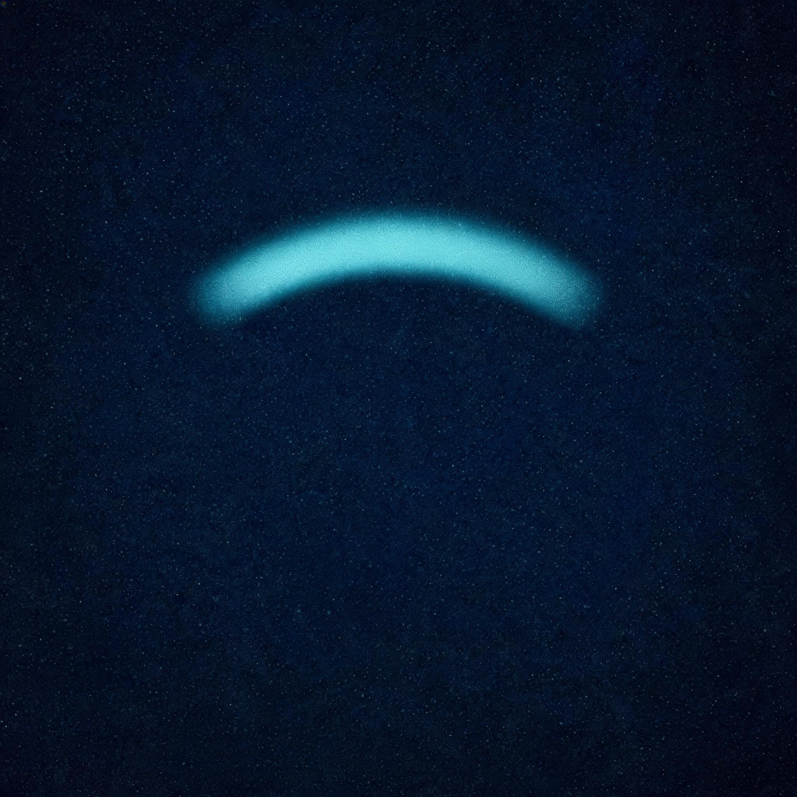

03 / 04
From the blog
Small observations on making digital things clearer, kinder, and more durable.
-

The quiet power of a good default
How a few thoughtful choices can make a complex product feel immediately useful.
-
Shipping less, but shipping it well
A practical case for smaller releases, tighter feedback loops, and better care.
-

Notes on designing for the edge
What constraints, overlooked users, and real-world conditions teach us about craft.